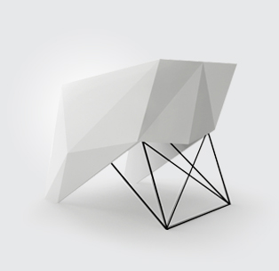

关于我们
-
点形点色(企业形象设计有限公司)。是一家以品牌服务为核心，同时倾力研究国际化品牌升级与创新的独立机构。我们与世界顶级的艺术设计团队协同合作，为跨国公司、行业标杆企业提供专属服务，创造出富有市场影响力的产品，服务和综合体验，并合理的将其商业化，成功推向目标市场。
同时，我们将不停的增加洞察力，分析未来市场发展方向，细心挖掘内地具有同样发展方向的中型生产型企业，帮助及扶持企业高效发展，为企业制定良好的品牌规划及完整的品牌未来发展生态链系统。 -
为了实现企业商业价值最大化，我们提供最具建设性的策略，方法和观点等务实专业的智慧支持，以此帮助以品牌价值及产品更新为市场动能的企业、商业运营机构和上市集团公司总裁获得持续可观的商业成功，同时积极构筑适合中国设计发展的商业模式和行业法则。
我们与西方客户，跨国公司合作，帮助他们理解中国客户及详细市场动态。我们同本土企业合作，开发有效品牌策略及使现有产品更加国际化，助其从“中国制造”到“全球品牌”的转移。 -
在过去的十年中，我们有幸与一些世界级的优秀品牌在多个类别、行业中进行了广泛的沟通与合作。我们的客户包括：GE通用、PETRONAS马石油、Tencent腾讯、华润建筑、柒牌、NIKE耐克、OPPLE欧普照明、LG、TCL、Hisense海信、KONKA康佳、长虹、OPPO、安吉尔等。
我们的工作覆盖多个专业领域，结合多项平台、媒体、技术以及对目标消费者和市场的洞察力，提供具有创新意识的人性化解决方案,在得到客户赞誉的同时，我们收获了更多的市场认可。
服务范围
-
品牌服务
我们从一个扎实的基础策略上延伸出我们所有的创意思维。我们给予客户的不仅仅在于一个设计的有多创新或好看，而是应该有效的解决了我们客户的品牌所需要的策略与挑战。
完善的品牌策略是需要不停的增加洞察力，一个项目的开始是完整了解客户的公司特质，我们与客户一起明确地探讨客户的品牌远景，品牌价值，品牌文化和品牌个性。
我们在创作一个新的品牌或升级一个品牌时，会通过我们的品牌规范从分析开始，再结合市场趋势，区分客户的竞争者，按照与客户沟通确认后的策略，互相配合，并设计一个全新的品牌印象展示给客户。
disdisar更加细致的品牌服务能更好的与客户的品牌战略相匹配，利于企业构筑健康的品牌生态链，我们整合海外资源，为客户品牌做持续性的更新，引导客户的品牌印象和产品有效信息至现实环境中，打造一个多元化的品牌体验。
在这项服务中，我们提供：品牌视觉形象识别设计 VIS
平面设计 > 海报 画册 宣传品
包装设计 > 结构创新
导视系统规划与设计
商业空间形象设计
商业摄影 -
媒体服务
科技的快速革新，信息产业的飞速发展改变着人们的消费行为、行为模式、生活方式等方面的价值取向。我们能洞察出，理解品牌价值核心，使产品体验过程超越产品本身，品牌认知度才能突破文化和区域限制得以不断延伸。
disdisar迎合时代变革方向，整合更具特效制作水准的好莱坞(Hollywood)团队，我们很荣幸于2011年与泰坦尼克号(Titanic)电影特效导演EVAN促成技术战略联盟的密切关系，以此作为disdisar媒体服务高端特效技术的很好保障。
“每一个作品都是一项新的挑战”-EVAN. 我们为了能更好的为目标群体展现品牌的独特视觉魅力，将创新执行技能整合为一个固定的项目实施流程：Discover,Innovation,Deliver(发现，创意，执行),旨在确保精准定位品牌的商业表达方式，创作适合品牌自身推广策略的多媒体视频，达到目标群体之间的持续化深度沟通，从而有效提升品牌价值。
在这项服务中，我们提供：影视后期制作
广告片拍摄
交互体验创新
特效 剪辑 配音 配乐
UI视觉设计 -

产品服务
我们的创新与产品优化探讨过程是非常严格的。让产品在市场中得到准确的定位和接受，这可以使客户的商业规划有明确的焦点。我们会与客户一起定位目标市场竞争对手，提出现有产品所存在的优点和缺点。
disdisar产品优化与设计的核心在于：专利／质量可靠／竞争／保养／重量／产品成本／运输／型号表现／服务／标准指标／美学／材料／产品寿命／政治因素／安全性／合法性和潜在卖点。这些标准用来确定原有产品是否存在提高改进的空间。
经济效益不仅仅是唯一标准，我们会考虑到新产品应给公司带来好的宣传效果且是客户一项产品外观上的突破。在新产品成功原型基础上，我们应用更多的想法让产品更加多样化（外观颜色／材质搭配／定位划分），以便更好的与销售市场相结合，尽量使目标消费者的选择性更丰富，虽然耗时会加长，但能拓宽产品本身潜在的收益方式和体验过程。
在这项服务中，我们提供：产品优化与创新
产品市场定位与策略
产品系列外观材质搭配解决方案
产品层次划分及设计推广策略
客户端
核心力量
招贤纳士